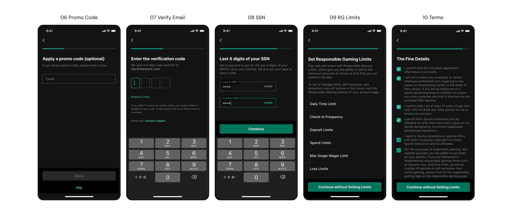
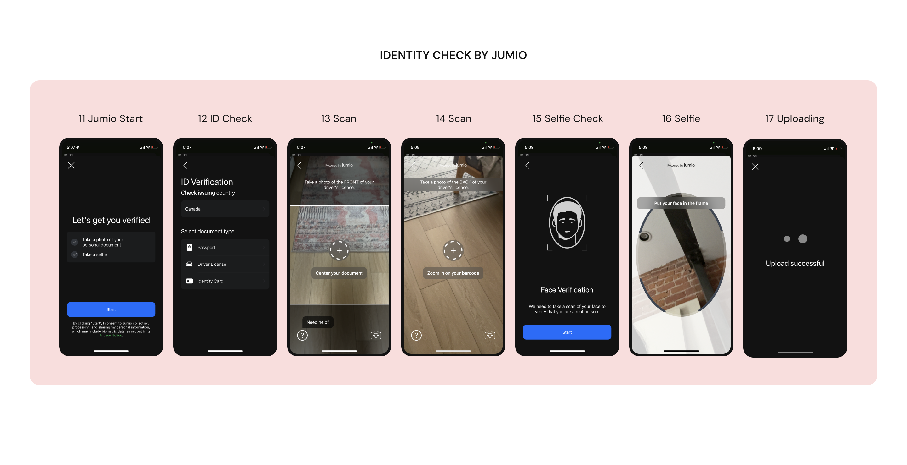

The sign-up flow was lengthy, had too many steps and created a lot of friction — leading to users abandoning before completing registration.

Rethinking a complex sign-up flow to reduce drop-off and drive growth.
The sign-up flow was lengthy, had too many steps and created a lot of friction — leading to users abandoning before completing registration.
We optimized the experience without cutting corners on compliance and worked with research to dig into the user frustrations.
All features were built to be scalable for multiple brands — theScore Bet, ESPN Bet and Hollywood Casino. For this case study, I'll be using ESPN Bet branding.
The sign-up flow was long, complex and outdated — a single form per page pattern that made the experience feel extra long, leading to high drop-off and slow user growth.
Revisiting it gave us the chance to refresh the designs and take another look at the compliance requirements — understanding where we could reduce friction, defer steps, and be more transparent with users about what to expect next.
We partnered with research to run user testing on a few design directions, using the insights to validate our decisions and build alignment across the team.


